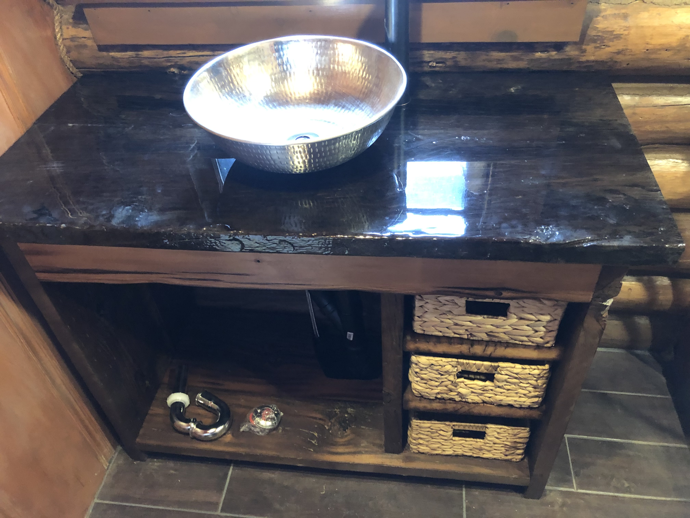
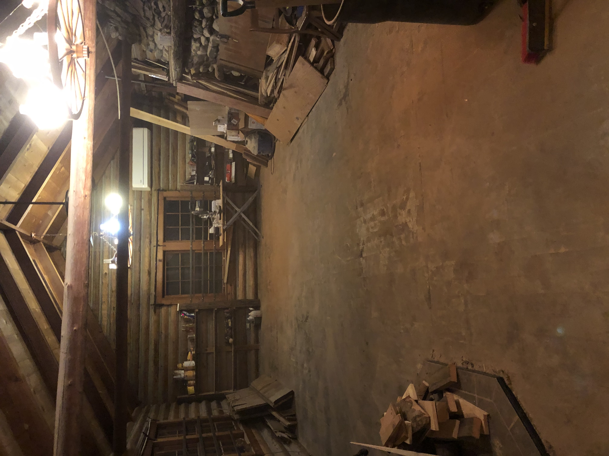
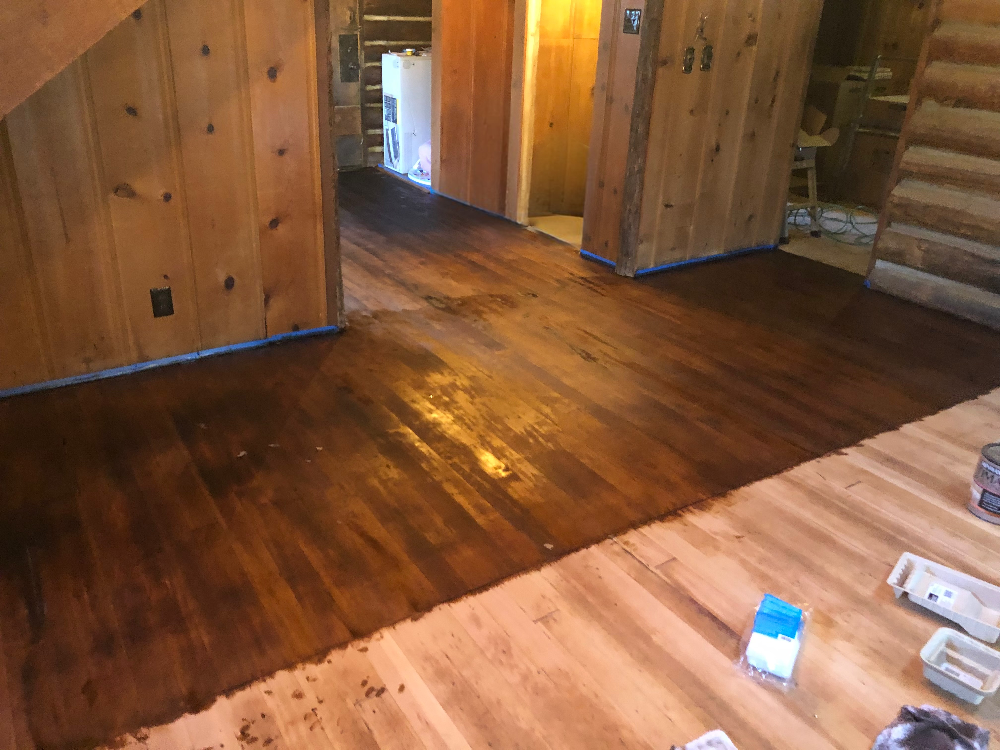
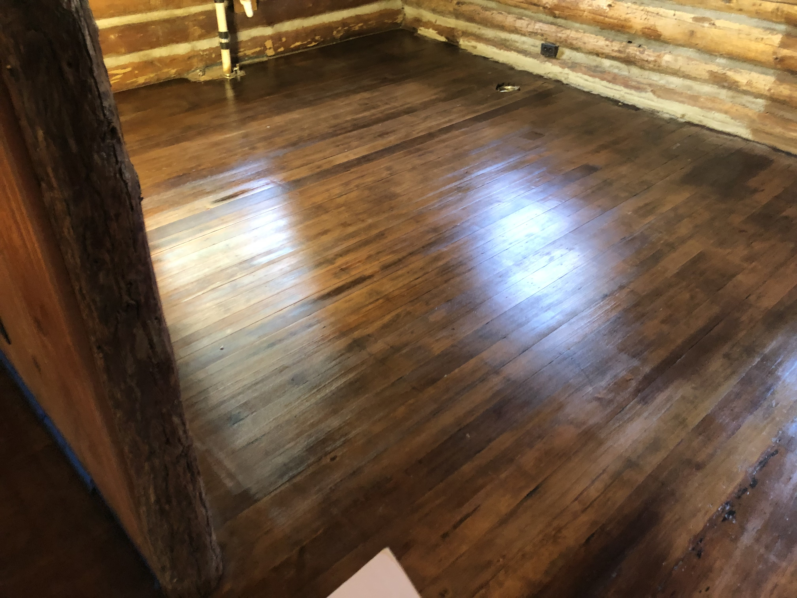
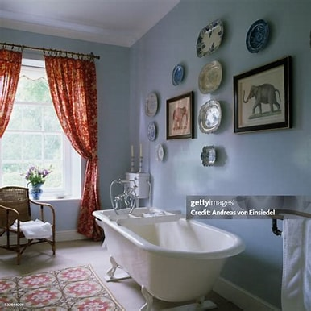
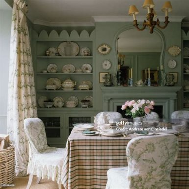
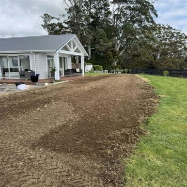
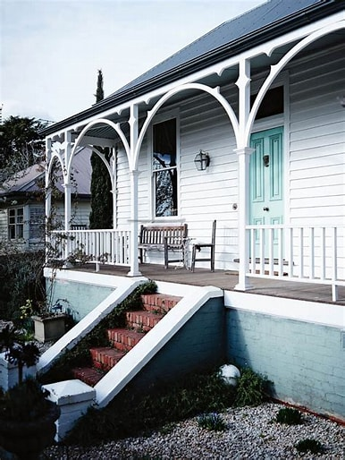

GENERAL REPAIR & RESTORATION - SERVING ALL OF AMADOR
Leaky pipes or squeaky door — Glen's the fix you're looking for.
At Glen’s Handy Maintenance, Glen Shelton combines a creator’s soul with rugged strength and precise ingenuity to elevate every project he touches. For over twenty years, both his life and his craft have been guided by a philosophy of building with God, patience, integrity, and care—approaching every complex problem one deliberate step at a time. With a rare ability to see the hidden potential in the weathered and worn, Glen takes rugged spaces and thoughtfully transforms them from the foundation up, turning structural challenges into beautiful escapes and a client's vision into a dream come true.
Drywall repair, framing, window/door installations, and trim work.
New rooms, bathrooms, and extra square footage — built to blend right in with what's already home.
Cabinet hardware, furniture assembly, shelving, tiling, and accent walls.
Fixture replacements, leak repairs, ceiling fans, and smart home setups.
Deck repairs, fence mending, pressure washing, and siding touch-ups.
Pre-sale home prepping, rental property turnarounds, and room updates.
Log Cabin Restoration




Country Home Restoration



